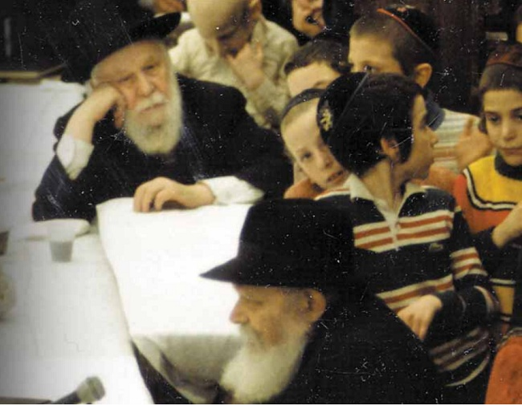

צרור מסמכים ש’בית משיח’ איתר בארכיון הג’וינט, חשף פרשייה דרמטית ומרגשת, של איתור
צרור מסמכים ש’בית משיח’ איתר בארכיון הג’וינט, חשף פרשייה דרמטית ומרגשת, של איתור וחילוץ הנערה מרים הורנשטיין, נינתו של הרבי המהר”ש – על ידי חתנא דבי נשיאה, הגה”ח רבי שמריהו גוראריה (הרש”ג) >> ‘בית משיח’ לקח את הפרשייה צעד אחד קדימה, איתר את גיבורת הסיפור, ושמע ממנה עדות מפורטת על השנים הקשות בבית המ
צרור מסמכים ש’בית משיח’ איתר בארכיון הג’וינט, חשף פרשייה דרמטית ומרגשת, של איתור וחילוץ הנערה מרים הורנשטיין, נינתו של הרבי המהר”ש – על ידי חתנא דבי נשיאה, הגה”ח רבי שמריהו גוראריה (הרש”ג) >> ‘בית משיח’ לקח את הפרשייה צעד אחד קדימה, איתר את גיבורת הסיפור, ושמע ממנה עדות מפורטת על השנים הקשות בבית המשפחה הפולנית, ניסיון ההסתרה מנציגי הג’וינט שבאו לפדותה ועד לחילוץ הדרמטי על ידי כוחות המשטרה והטיסה ללונדון במטוס צבאי

בצרור מסמכים מרתקים, שאותרו בארכיון הג’וינט (שעבר דיגיטציה ועלה על האינטרנט הודות למענק מד”ר ג’ורג’ט בנט וד”ר ליאונרד פולונסקי) - נחשפה בפנינו פרשייה מרתקת של הצלת נערה יהודיה צעירה, נינת כ”ק אדמו”ר המהר”ש, מהמשפחה הפולנייה שהסתירה אותה במהלך שנות השואה האיומה.
לאחר שקיבלתי לידיי את המסמכים המרתקים, הצלחתי לאתר את גיבורת הפרשייה, מרים יובל (טייכמן) לבית הורנשטיין. היא התרגשה לשמוע את הפרטים החדשים שחשפנו בארכיון הג’וינט על מבצע החילוץ שלה, ובראיון ארוך ומרתק שיתפה אותי בסיפור ההצלה כפי שנחקק בזכרונה מהזווית שלה.
מי נהרג, ומי שרד?
פרשיית ההצלה החלה במברק ששיגר הרש”ג בד’ תשרי תש”ו אל משרדי הג’וינט בוורשה, בבקשה שיסייעו לו להתחקות אחר בני משפחתו שנעלמו בפולין בשנות השואה האיומות, ולא נודע מה עלה בגורלם.
אנשי הג’וינט ניהלו חקירה מהירה, וכעבור שבועיים, בי”ח תשרי תש”ו, שיגרו לרש”ג את המכתב הבא:
אדון נכבד:
בנוגע למברקך מה–11 בספטמבר, אנו מודיעים לך כי מענדל ושיינא הורנשטיין מתו. ילדם הצליח לשרוד וחי בפולין. - הכתובת שלו ידועה לנו.
ר’ מנחם מענדל הורנשטיין הי”ד, היה גיסו הצעיר של הרש”ג, שנישא לרבנית שיינא הי”ד, בתו של כ”ק אדמו”ר מהוריי”צ. בני הזוג אימצו את אחיינם, יקותיאל יעקב יוסף ליס. לרגע היה נדמה כי הבן המאומץ ניצל מהשואה.
אולם עד מהרה התברר כי הייתה כאן טעות בזיהוי, לאחר שבמחלקה לאיתור קרובים שבמשרדי הג’וינט בניו–יורק התקבל מכתב מבני המשפחה הפולנית, ממנו עלה כי לא מדובר בבן המאומץ של הרמ”מ הורנשטיין, אלא בבת אחיו, ר’ שמואל הורנשטיין הי”ד.
ביום כ”ה תשרי תש”ו שיגרה הגב’ ז’נט רובינס מהמחלקה לאיתור קרובים של הג’וינט בניו–יורק, מכתב עדכון למר גוז’יק (ג’וינט - ורשה):
הרב ש. גורארי, 770 איסטערן פארקוויי, ברוקלין, ניו יורק, עמד אתנו בקשר אודות מרים הורנשטיין, בתו של שמואל הורנשטיין. אנו קיבלנו מכתב מאת יוסף קומאלא בו מודיע כי הילדה נמצאת עמו. הרב גוראריה רוצה שמרים תסע לפלשתינה בכדי לחיות שם עם דודה [ר’ פנחס ורחל לנדא]. הוא משתדל להשיג עבורה ‘סרטיפיקט’ והוא הבטיח ליידע אותנו כאשר יאשרו הנפקת תעודה זו בכדי שנוכל ליידע אותך.
בינתיים, אנו מעריכים כל מה שתוכל לעשות בכדי לעזור לילדה. הרב גוראריה רוצה לטפל בהוצאות התחזוקה שלה והצענו לו לשלוח כספים אליה דרכך.
אל הגטו, ומשם אל דירת המסתור
ר’ שמואל הורנשטיין, היה בנם של הרה”ח ר’ משה ומרת חיה מושקא הורנשטיין, בתו וחתנו של הרבי המהר”ש. הוא נישא למרת בריינא ממשפחת הגאון הגדול רבי יעקב געזונדהייט (רב ואב”ד וורשא בעהמח”ס תפארת יעקב על מסכת גיטין וחולין ועוד), ועבד כמנהל מחלקת החינוך בקהילה היהודית בוורשה.
לבני הזוג נולדו שני ילדים - אורי, שנספה בשנת תש”ג במחנה טרבלינקה; ותבלחט”א מרים, גיבורת סיפורנו. ר’ שמואל וזוגתו נספו בגטו וורשה בשנת תש”ג.
בשיחה הארוכה שניהלנו השבוע, גוללה מרים את זכרונות ילדותה. למרות שהיא ביקשה לסייג ולהבהיר שמדובר בקטעי זיכרונות מגיל צעיר מאוד, וחלקים מהם בנויים על מה שסיפרו לה קרובי המשפחה בשנים מאוחרות יותר, הרי בדיבורה הרהוט והצלול הצליחה לתאר תמונה מקיפה של הקורות איתה בשנים האיומות ההן:
“התגוררנו בוורשה, וכאשר פרצה המלחמה הייתי ילדה קטנה. בזכרוני שמור ביקורו של הרבי הריי”צ בביתנו, בטרם נמלט מהגטו בדרכו לארצות הברית. באותם ימים הייתי חולה, ושכבתי במיטתי, אבל עד היום אני זוכרת את הפרידה המרגשת ממשפחתו של הרבי. קיבלתי צעצוע קטן כמתנת פרידה מהרבי הריי”צ.
“בשלב מסויים יצאנו מוורשה, ועברנו לאטווצק, שם התגורר סבי, הרב משה הורנשטיין. הוא היה מנהל אדמיניסטרטיבי של בית יתומים באטווצק, והתגורר במתחם בית היתומים. אטווצק הייתה עיירת נופש, ובמשך השנים היינו שוכרים בימי הקיץ דירה קטנה סמוך לבית היתומים, ומבלים את הזמן עם המשפחה.
“כנראה שבשלב מסויים הבין אבי את הגורל המר הצפוי ליהודים מידי הצוררים הגרמניים ימ”ש, והוא יצר קשר עם כומר קתולי, שהיה אחראי על מחלקת החינוך הקתולית בוורשה, ואבי הכירו מתוקף תפקידו כמנהל מחלקת החינוך היהודית. אינני יודעת בדיוק את הפרטים, אבל ממה שהבנתי הכומר הזה סידר עבורי תעודת זהות נוצרית, וסיכם עם משפחה פולנית שיסתירו אותי בביתם, תמורת סכום כסף גדול.
“מכיוון שאי–אפשר היה לסמוך על הפולנים שלא יסגירו אותי לגרמנים לאחר שיקבלו לידיהם את הכסף, הפקיד אבי אצל הכומר סכום גדול מאוד, והכומר היה מעביר למשפחה הפולנית בכל כמה חודשים סכום כסף נאה. כך הבטיח שימשיכו להסתיר אותי עד תום המלחמה.
“אינני יודעת מדוע, אבל הדרך למשפחה הפולנית, עברה דווקא דרך גטו וורשה. לקחו אותי מאטווצק, והכניסו אותי לגטו. אני זוכרת שדיברו אז על האבסורד שבדבר - כולם מחפשים איך לצאת מהגטו, והנה מביאים אותי אל תוככי הגטו.
“זמן קצר אחר–כך, לקח אותי אבי אל קבוצת אנשים שיצאו מהגטו לעבודת כפייה בבתי החרושת של הגרמנים, והצמיד אותי לאחת הנשים. הייתי קטנה מידי כדי להבין מה שקורה. פשוט עשיתי מה שאמרו לי. מישהו נתנה לי יד, והלכתי איתה. כעבור כמה רחובות, באיזשהו מקום בדרך, מישהי אחרת לקחה אותי, והביאה אותי לבית משפחת קומאלא הפולנית.
במנזר נוצרי, תחת זהות מזוייפת
“הסתתרתי אצלם כמה חודשים. למרות שהיו לי תעודות נוצריות, הם העדיפו שאף אחד לא יידע שאני נמצאת בביתם, ובכל פעם שמישהו היה מגיע לבקר - הייתי צריכה להתחבא מתחת למיטה הרחבה שהייתה במטבח הבית.
“כעבור כמה חודשים הביאו לביתם ילד יהודי נוסף. אלא שבשלב מסויים הוא חלה, והם נאצלו להביא לביתם רופא שיטפל בילד. איכשהו נודע לשלטונות על הילד היהודי שמסתתר בביתם, ושוטרים פולניים פרצו לבית וחטפו את הילד. כנראה שהמידע שבידם היה אודות הילד בלבד, שכן לאחר שמצאו אותו - יצאו מהבית, ולא המשיכו בחיפושיהם. למזלי הגדול, באותה רגעים ישנתי מתחת למיטה שבמטבח, וכך לא ראו אותי.
“למרות שהשוטרים לא גילו אותי, היה ברור שמסוכן עבורי להמשיך ולשהות בביתם, וכעבור זמן קצר הכומר הגיע ולקח אותי למנזר, שם רשם אותי כבת אחותו.
“אינני זוכרת כמה זמן בדיוק שהיתי במנזר. לפחות כמה חודשים. לאחר שהתברר שהמשטרה לא הגיעה שוב לבית משפחת קומאלא, החליט הכומר להחזיר אותי לביתם.
לבד בבניין המופגז
“כפי שציינתי, מידי כמה חודשים העביר הכומר למשפחת קומאלא סכום כסף, ממה שקיבל מהוריי. אולם כעבור תקופה נגמר הכסף, וריחפה עליי סכנה גדולה. למרבה האבסורד, מה שהציל אותי, היה הגזירה של הגרמנים ימ”ש, שהודיעו כי פולנים שמסתירים יהודים בביתם, יכולים להסגיר את היהודים עד תאריך מסויים והם עצמם יקבלו חנינה, אולם מאותו תאריך והלאה - כל מי שיימצא בביתו יהודי, אפילו אם יבוא ביוזמתו להסגירו, אחת דתו למות. מכיוון שהכסף שהכומר העביר נגמר לאחר אותו תאריך גורלי, נוצר מצב שבני משפחת קומאלא לא העזו להסגיר אותי לגרמנים, מחשש שהם עצמם יהרגו…
“כל עוד הם קיבלו את הכסף עבורי, התנהגו אליי יפה. אבל לאחר שהבינו שלא יקבלו עוד כסף - יחסם אליי הלך והחמיר. היו אלה שנים קשות מאוד. כילדה חשתי היטב שאני אורחת מאוד לא רצוייה בביתם של הקומאלאים, והשתדלתי שלא להתבלט ולא להרגיז יותר מידי…
“לקראת סוף המלחמה, כאשר וורשה הופצצה מהאוויר על ידי בנות הברית, כולם היו יורדים למקלטים בזמן ההפצצות, אבל אני לא יכולתי לרדת למקלט, שכן עובדת המצאי בבית הקומאלאים הייתה סוד כמוס. לכן נותרתי לבדי בבית החשוף להפצצות.
“כילדה קטנה, כנראה שלא הבנתי את גודל הסכנה, ודווקא נהניתי בזמן ההפצצות, שכן זו הייתה ההזדמנות היחידה שהייתי יכולה לצאת למרפסת ולהסתכל על העולם מסביב. הייתי עומדת ומסתכלת על המטוסים המטילים את הפצצות, וחושבת לעצמי איזה ברת–מזל אני, שמלבד כוחות הצבא שמפעילים את מערך ההגנה האווירית - אני האזרחית היחידה שיכולה לצפות במחזה הסוריאליסטי של הפצצות הנוחתות בזה אחר זה ומאירות את חשכת הלילה… הייתי עומדת שם עם בובה קטנה, ומסבירה לבובה שאין מה לפחד מהמטוסים…
“לקראת סיום המלחמה, בקיץ תש”ד, התקרב הצבא הסובייטי לוורשה, וצבא המולדת הפולני שניסה לשחרר את בירת פולין מהכיבוש הנאצי, לפני הגעת כוחות הצבא האדום אל העיר, פתח ב’מרד וורשה’. דיכוי המרד על ידי הצבא הנאצי היה אכזרי ביותר, ובמהלכו נהרגו לפחות 200 אלף אזרחים פולנים והעיר ורשה נחרבה כמעט כליל.
“בשלב מסויים הגרמנים שלחו את הגברים הצעירים לעבודות כפייה בגרמניה, ואילו לאזרחים המבוגרים והילדים - איפשרו לברוח מהאזור ברכבות. עלינו על אחת הרכבות, והתחלנו במסע ארוך מאוד. מידי פעם היו מטוסים של בנות הברית מפציצים את האזור בו עברנו, ואז הרכבת הייתה נעצרת, וכולנו היינו מחפשים מקום מסתור.
“בשלב מסויים, לאחר שההפצצה הסתיימה וכולם עלו חזרה על הרכבת, החליטו בני המשפחה להפסיק את המסע, ולהשתקע באזור עד יעבור זעם. התגוררנו בכפר קטן ליד קרקוב, ולאחר כמה שבועות עברנו להתגורר בעיר קרקוב הגדולה.
“בינתיים הרוסים כבשו את האזור. יוסף קומאלא, שהיה חייט במקצועו, החל לתפור מדים עבור חיילי הצבא הרוסי. למרות שהשפה הפולנית והרוסית דומות אחת לשניה, הוא לא הצליח לתקשר עם החיילים הרוסים. בשלב זה באתי לעזרתו עם השפה הרוסית, אותה הכרתי בזכות דודתי, שיינא, בתו של הרבי הריי”צ. מאחר והיא לא ידעה פולנית, הרי בביקוריה בביתנו, הייתה מדברת איתי ברוסית… כך הפכתי למתורגמנית בין יוסף קומאלא והחיילים הרוסים, והמוניטין שלי בבית קומאלא עלה, והחלו להתייחס אליי יפה יותר.
“בשלב זה, מסתבר שנוצר קשר בין יוסף קומאלא לכומר שעזר לי בשנות המלחמה הראשונות. לכומר היו כתובות של קרובי משפחתי בחו”ל - וידוע לי כי הוא שיגר אליהם מכתבים עם פרטים על מקום המצאי. הוא שלח מכתב אל הרבי הריי”צ בניו–יורק, לדודיי פנחס ורחל לנדא בארץ ישראל, ולבני הדודים של אבי, שמואל צמח וחנה עוזרמן בלונדון (מרת חנה הייתה בתו של הרמ”מ שניאורסאהן, בנו של הרבי המהר”ש)”.
הפולנים מסרבים להחזיר את הילדה
נחזור לסיפור ההצלה כפי שהוא משתקף ממסמכי הג’וינט: לאחר כמה שבועות, ביום כ”ב חשון תש”ו, מר ד. גוז’יק ומר ג’יי גיטלר–ברסקי ממשרדי הג’וינט בוורשה, כתבו למשרדי הג’וינט המרכזי, שהפולנים שהסתירו את הילדה לא רוצים לאפשר לה לחזור לחיק משפחתה:
בתשובה למכתבך מ–2 באוקטובר 1945, בדבר סיוע למרים הורנשטיין, אנו מודיעים לכם כי היא חיה עד עכשיו בטיפולו של יוסף קומאלא בקרקוב. הילדה נמצאת תחת אחריותנו ואנחנו משלמים קצבה חודשית למשפחה עבור הוצאות התחזוקה.
באשר לשאלת לקיחת הילדה מאת המשפחה, עלינו להודות כי עד כה הם לא הסכימו להחזיר אותה, ולא רוצים שהילדה תעזוב אותם למקום מרוחק. עם זאת אנו חושבים כי לאחר קבלת ה’סרטיפיקט’ נצליח להחזיר את הילדה למשפחתה.
את הרקע לדברים שמענו השבוע מפיה של מרים:
“קודם כל, ראוי לציין שנציג הג’וינט בוורשה היה ידיד טוב של אבי. ייתכן שכך היה גם לו את המידע אודותיי, וזה מסביר גם את העובדה שכאשר הג’וינט איתרו אותי בקרקוב, הם החלו לשלם למשפחת קומאלא עבור החזקתי.
“אלא שברגע שיוסף קומאלא הבין שיש יהודים שמעוניינים בי, הוא חשב שיוכל לסחוט מהם סכומי כסף גדולים, מעבר לסכומים הגדולים שקיבל בשנים הראשונות של המלחמה, וכתב שיהיה מוכן להחזיר אותי רק לאחר שיקבלו סכום גדול מאוד. לאחר שהבין מנציגי הג’וינט שהם לא מוכנים לשלם את הסכום שדרש, החליט להבריח אותי מקרקוב, ולהסתיר אותי עד שיהיו מוכנים לשלם עבורי את הסכום הגדול שדרש.
“וכך ביום בהיר עזבנו את קרקוב, ונסענו עד לעיר גדנסק, בקצה השני של פולין. שם התיישבנו בבית שדייריו עזבו אותו בחופזה בזמן המלחמה. היה זה בית מרוהט, ואפילו המשחקים של הילדים עדיין היו מונחים במקומם.
“אני כמובן לא הייתי מודעת באותם ימים למה שמתרחש מאחורי הקלעים. לא ידעתי שמחפשים אותי, ולא הבנתי שהמעבר שלנו לגדנסק נועד כדי להפעיל לחץ על בני משפחתי שיסכימו לשלם סכומי כסף גדולים תמורת שחרורי”.
החילוץ הדרמטי במדרגות החשוכות
כמה חודשים הצליח יוסף קומאלא להעלים את הילדה, אולם לאחר עבודה מאומצת של אנשי הג’וינט בוורשה, הם הצליחו לעלות על עקבותיו וביום ג’ שבט תש”ו חילצו מידיו את מרים הורנשטיין והביאו אותה למקום מבטחים בחסות הג’וינט. במברק ששיגרו בו ביום ללונדון, לירושלים ולרש”ג, כתבו: “מרים הורנשטיין נלקחה ממר קומאלא, היא נמצאת תחת טיפול הג’וינט. אנו מתכוננים להגירה. ג’וינט”.
החילוץ הדרמטי חרות היטב בזכרונה של מרים:
“באותו בוקר הלכתי עם גב’ קומאלא לקניות בשוק. היה זה ערב החגא הנוצרית, והיא רכשה עץ אשוח. כאשר חזרנו מהקנייה, נכנסנו לבניין בו התגוררנו. היה זה בית בן שלוש קומות, ואנחנו התגוררנו בעליית הגג. עלינו במדרגות הצרות והחשוכות, וכאשר הגענו לקומה השניה, הופתענו לראות מולנו קבוצת שוטרים הקוראים לנו לעצור.
“אני הייתי מבוהלת מאוד. לא היה לי שמץ של מושג שהשוטרים הללו חפצים בטובתי ובאו לחלץ אותי. מבחינתי, לאחר שנות המלחמה הארוכות, השוטרים ייצגו את כוחות הרוע המפחידים ביותר. הם התקשרו אצלי באופן טבעי עם הגרמנים הארורים.
“באינסטינקט הסתובבנו על המקום ורצינו לרדת למטה, לברוח מהם אל הרחוב, אלא שמהקומה הראשונה עלו שוטרים נוספים ולמעשה חסמו לחלוטין את דרכנו.
“ואז אחד השוטרים תפס אותי. הייתי ילדה קטנה ורזה, והוא לקח אותי בזרועותיו והוריד אותי אל הרחוב, שם עמדה מונית קטנה, ובתוכה אנשי הג’וינט. אחת מנציגות הג’וינט הזדהתה לפניי כחברה של אמי, ואמרה שבאה להציל אותי. הייתי מבולבלת מאוד. לא ידעתי אם להאמין לה. למעשה לקח לי זמן עד שהבנתי את התמונה המלאה, ונתתי אמון מלא באנשי הג’וינט. משם נלקחתי לבית יתומים של הג’וינט, ותקופה מסויימת אף שהיתי בביתו של מנהל הג’וינט בוורשה”.
הג’וינט: לאחר קושי רב - הצלנו את הנערה
על מהלכי החילוץ מנקודת מבטם של אנשי הג’וינט אנו קוראים במכתב שנשלח בג’ שבט תש”ו ממשרד הג’וינט בוורשה אל משרד הג’וינט בלונדון. מכתבים דומים נשלחו גם למשרדי הג’וינט בירושלים, ואל הרש”ג:
היום שלחנו לכם את המברק הבא:
“מרים הורנשטיין נלקחה ממר קומאלא, היא נמצאת תחת טיפול הג’וינט. אנו מתכוננים להגירה. ג’וינט”.
אנו מבקשים שתשימו לב לתוכן הנ”ל.
במקביל אנו מודיעים לכם את הפרטים הבאים הנוגעים לעניין: זה היה עבודה קשה מאוד לקחת את הילדה ממר קומאלא, כי כאשר הוא חש שאנו מתכננים את הגירת הילדה ומפחד לאבד בכך מקור משתלם של הכנסה, הוא נתן לנו כתובת לא אמיתית, וניסה להסתיר את הילדה על מנת למנוע את האפשרות שתעזוב אותו.
נאלצנו להשתמש באמצעים דרקוניים, כמו התערבות של עורך הדין ושל רשויות המשטרה המקומית. הרשויות נתנו לנו את עזרתם, כי היה ברור כי מר קומאלא מתעלל בנו לצורך סחיטה הן מאתנו והן ממשפחת הילדה בחו”ל. לאחר מחקרים יסודיים עלינו על עקבות הילדה ולבסוף סידרנו את העניין, ושמנו את הילדה אצל אחד העובדים שלנו.
הילדה נמצאת במצב בריאותי טוב מאוד ומרוצה מהשינוי במצבה.
כבר ביקשנו במשרד החוץ כאן דרכון עבורה, ולאחר שנקבל אותה, שאנו מניחים שיהיה תוך כשבועיים, נדאג לנסיעת הילדה ללונדון.
בשגרירות הבריטית הבטיחו לנו כל עזרה אפשרית בסידור מקום טיסה והגנה מתאימה במהלך מסעה. אנחנו משוכנעים כי בזכות הנסיבות האחרונות, הילדה תוכל להצטרף בקרוב למשפחתה בחו”ל.
מסתבר שלא רק הג’וינט היה מעורב במאמצים לחילוצה של מרים הורנשטיין מפולין. דודתה סיפרה לה, כי הרבי הריי”צ שיגר מכתב לגב’ אלינור רוזוולט, אשתו של נשיא ארצות הברית פרנקלין דלאנו רוזוולט, שעסקה בפעילות הומניטרית נרחבת ובקידום זכויות אדם ברחבי העולם, וביקש אותה לסייע בחילוץ קרובת משפחתו מפולין ללונדון.
כך או כך, יום אחד קרא לה מנהל הג’וינט בוורשה, ובישר לה שבקרוב תטוס לדודים שלה בלונדון. לקראת הטיסה הוא לקח אותה לאולם ענק, בו היו משלוחי בגדים שהגיעו מאמריקה לטובת הפליטים, ואמר לה שתבחר לעצמה בגדים יפים. כנראה שהוא לא ידע בדיוק מה מתאים לילדים, אבל גם היא לא ידעה… היא נזכרת בצחוק בנעליים שבחרה, שהיו נעליים יפות לטעמה, אך גדולות עליה בכמה מידות. גם הבגדים לא היו כל כך מתאימים אחד לשני, וכאשר דודתה חנה עוזרמן קיבלה את פניה בלונדון, היא נדהמה למראה הבגדים המוזרים בהם הייתה לבושה…
ללונדון הגיעה במטוס צבאי, כאשר משלחת של בנות הברית הגיעה לוועידה בוורשה, ובדרכם חזור ללונדון - לקחו איתם את הילדה.
כמעט שנה שהתה בלונדון, אצל דודתה חנה עוזרמן, עד שקיבלה את אישור הכניסה לארץ ישראל, ונסעה לדודים שלה בירושלים, ר’ פנחס ורחל לנדא. במהלך השנים המשיכה מרים לעמוד בקשר עם הרש”ג, ונפגשה עמו בביקוריו בארץ ישראל.
תשלום למשפחה המאמצת
כעבור למעלה משנה, לאחר שהנערה כבר הגיעה לארץ ישראל, משרד הג’וינט בוורשה עמד בקשר עם הרש”ג לעניין התשלום שאמור היה להיות משולם עבור המשפחה הלא–יהודיה, בתור החזר על ההוצאות שלהם במהלך שנות המלחמה. המכתב הבא מט’ תשרי תש”ח אל הרש”ג דן בבקשה זו:
קיבלנו את מכתבכם מה–8 באוגוסט בדבר תשלום עבור התחזוקה של מרים הורנשטיין בתקופת המלחמה ואנו מודיעים לך שכבר היתה לנו התכתבות ממושכת במקרה זה הן עם מר סיסרמן בלונדון והן עם המשרד המרכזי שלנו בניו יורק. בכדי לסדר את העניין סוף סוף אנחנו חוזרים שוב על העובדות הקשורות למקרה זה.
כמה אישים בולטים מחו”ל פנו אלינו בהצעה לקחת את מרים הרחק מהוריה המאמצים, מר וגברת קומאלא שלא רצו לוותר על הילדה. הם הסתירו אותה ונאלצנו להוציא את הילדה משם על ידי הסיוע של כל הרשויות המקומיות והיינו צריכים להבטיח באופן רשמי בנוכחות הרשויות כי כל ההוצאות הקשורות בשמירת הילדה במהלך שהותה עם משפחת קומאלא תוחזרנה…
סיכום הפרשייה,ועדותו של מר קומאלא
נסיים את הפרשייה המרתקת הזאת, במאמר שכנראה הוכן על ידי הג’וינט לפרסום בעיתונים, ומתאר את סיפור הצלתה של מרים הורנשטיין:
לעבודה שלנו יש מעט מאוד במשותף עם עבודה רגילה במשרד. להיפך, במקרים רבים מאוד זה מזכיר סרט אמריקאי או מותחן מודרני, החילוק היחיד הוא כי אנחנו מטפלים בגורל בני אדם ולא ביצירות דמיוניות.
הסיסמה שלנו היא זהה לשל הסרטים אמריקאיים “תמיד חייב להיות סוף טוב למרות הכל”. גיבורי הסיפורים שלנו אין בהם שום דבר הרואי; הם בדרך כלל יתומים, נשים מבוגרות שחוו חוויות קשות בחיים, ולפעמים זוגות נשואים טריים שיש להם עדיין מספיק כוח בכדי לנסות פעם נוספת.
כך קרה בסיפור מרים הורנשטיין. ב–25 בפברואר 1945, דהיינו שבועות בודדים לאחר שחרור העיר וורשה, כאשר עדיין נערכו קרבות קשים עם הגרמנים על גבולותיה המערביים של פולין, משרדנו בוורשה קבלו את המברק הבא מניו יורק:
“אנא להקל בכל דרך אפשרית את הגירת מרים הורנשטיין הנמצאת בטיפולו של יוסף קומאלא … שעבורה הקונסול הבריטי אישר ‘סרטיפיקט’ לפלשתינה, ולהודיע לנו. הג’וינט”.
הצעד הראשון היה לחקור את המקרה. יצרנו קשר עם האפוטרופוס של מרים הורנשטיין, הרי הוא מר קומאלא, וזה היה הסיפור שסיפר לנו:
“ב–1943 התברר אף לאופטימיים ביותר שגורל היהודים בגטו ורשה נחרץ, המצב הלך מדחי אל דחי, התושבים ששרדו בגטו ורשה חיו תחת צל מתמיד של מוות, והם הבינו כי ימיהם ספורים.
ב–8 באפריל, גברת שנאבל, אשה יהודיה שהכרנו, הגיעה אלינו והביאה איתה ילדה בת תשע שנים, מרים הורנשטיין; היא ביקשה מאתנו לטפל בילדה והבטיחה שהיא תחזור בקרוב ותביא איתה את הכסף הדרוש עבור הטיפול בילדה. אנחנו לא ראינו אותה מאז.
כמה ימים לאחר מכן פרץ המרד בגטו ורשה וכנראה ההורים של מרים הורנשטיין וכן גברת שנאבל קיפחו את חייהם.
אני לא רוצה לספר את כל הסכנות שהצלנו אותה מהם. פעמיים סחטנים שדדו מאתנו את כל הכסף, הזהב וניירות הערך שלנו. בכדי למנוע חשד נאלצנו להסתיר אותה בשכונות ורשה ולשלם עבור התחזוקה שלה. בקיצור, הצלחנו להתגבר על כל הסכנות והקב”ה הציל את חייה. כל זה דרש הוצאות כבדות”.
מכתב שנכתב על ידי משרדנו בוורשה ב–7 בינואר 1946, כלומר כמעט שנה לאחר קבלת המברק הראשון מניו יורק, מוסר תמצית קצרה וצנועה של הפרק הבא של הסיפור:
[כאן ציטטו אנשי הג’וינט את המכתב ששלחו בג’ שבט תש”ו, ואחר–כך המשיכו]
זה נמשך עוד כמה חודשים עד שהצלחנו לארגן את עזיבת הילדה. היינו צריכים להתגבר על מכשולים רבים. נעזרנו בעבודתנו על ידי ההבנה העמוקה כי אנחנו עושים טובה למישהו, ובזכות המאמץ שלנו עוד ילד יהודי חסר–בית יחזור לביתו, ועוד משפחה יהודית תשוב להתאחד. ידענו שאנחנו לא יכולים להיכשל.